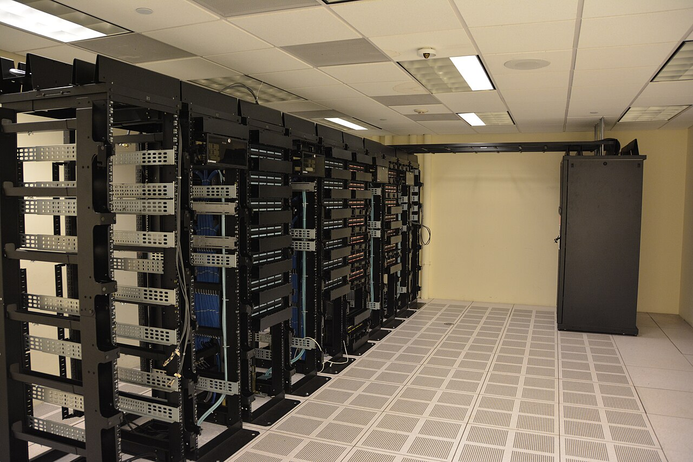

Lecture 4: Internet Protocols, Domain Name System, and URLs
CS-44105-001 - Web Programming I - Fall 2026

Lecture 4 covered the rules and systems that let computers on the Internet actually understand one another. An Internet protocol is an agreed-upon set of rules for formatting and transmitting data, such as the TCP/IP suite that governs how data is broken into packets, addressed, and delivered across the network.
We then covered the Domain Name System (DNS), which acts like a phone book for the Internet. Every server has a numeric IP address, but humans use readable domain names instead (like kent.edu). DNS servers translate a domain name into its corresponding IP address so a browser knows exactly which server to contact.
Finally, the lecture broke down the anatomy of a URL (Uniform Resource Locator): the scheme (such as https), the domain name, an optional port, the path to a specific resource, and optional query parameters or a fragment. Together, protocols, DNS, and URLs are what let a browser find and retrieve exactly the right page from anywhere on the Internet.